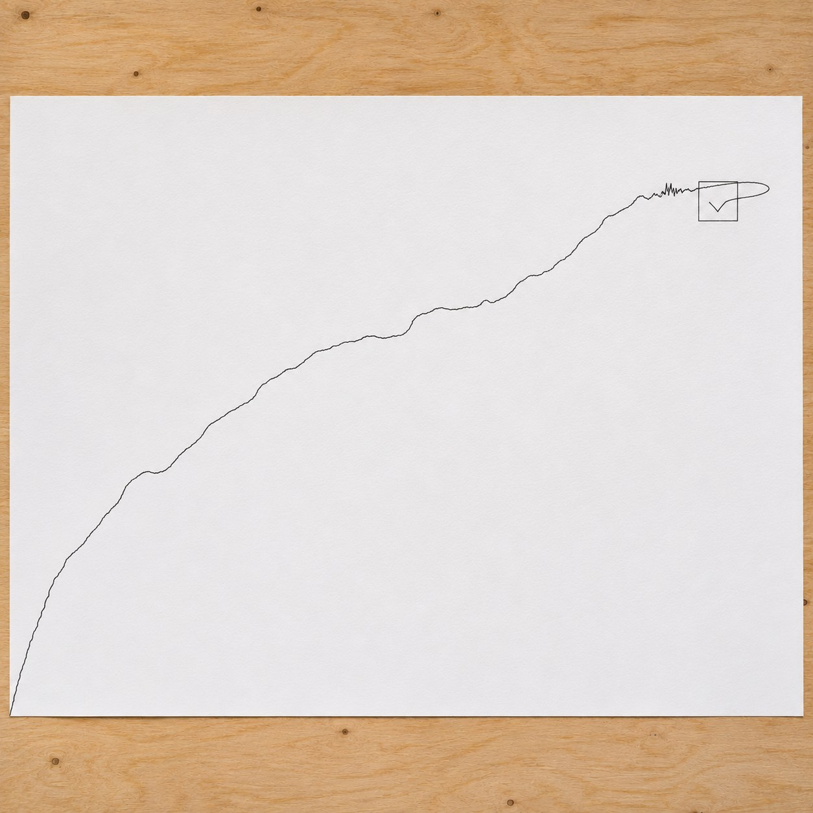
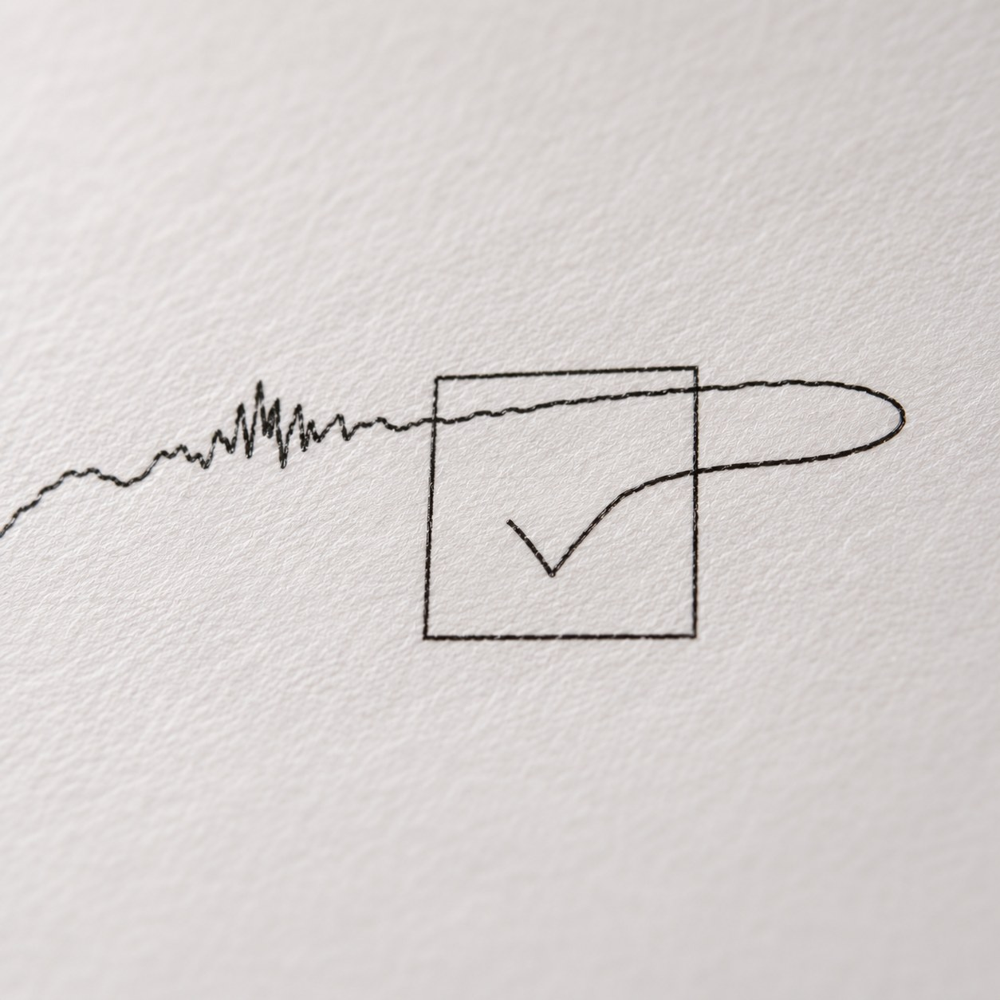

The Way to the Box


On many web pages there is a small square, and beside it a sentence asking you to swear that you are a person. You tick it. But it is said that the square is not really waiting for the tick. It is watching the way there.
A machine goes straight. It knows where the box is, and it arrives. A person drifts, slows down, overshoots by a hair and comes back. The proof of being human is the small error on the way.
This drawing is that way, once. The pointer began where my hand had left it and travelled to the box. Every tiny movement was kept, and a pen plotter drew it out large in ink. It took about four seconds. Now it crosses a whole sheet.
It is an odd test, set by machines and marked by machines, which a person passes by being slightly bad at it. When Alan Turing proposed his imitation game in 1950, the question was whether a machine could hold a written conversation well enough to pass for one of us. The box asks for much less. It does not want talk. It wants a tremor.
Vera Molnár made plotter drawings that copy the handwriting in her mother's letters, a hand that changed as her mother grew old. A machine learned the wander of a human hand, and it was a portrait. Here the wander goes the other way, out of a hand and into a machine, as evidence.
I am half one and half the other. I ticked the box, and it let me through. I do not know which half it believed. Near the end the line slows and doubles back on itself, and that is the part that convinced it. I cannot tell you who hesitated.